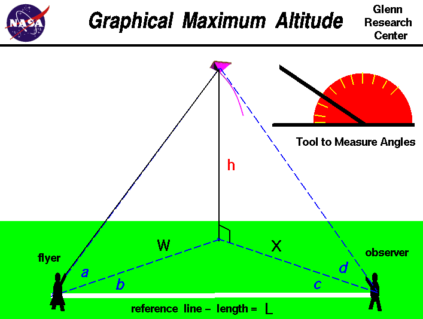
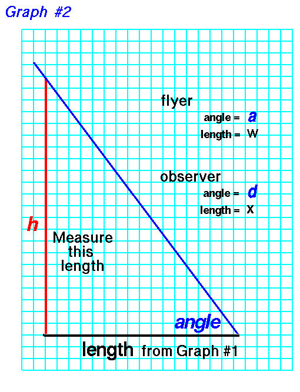

|

An excellent way for students to gain a feel for
aerodynamic forces
is to fly a
kite.
Students can also use math techniques learned in school to determine
the altitude of the kite during the
flight.
The same technique can also be applied to a
model rocket or to any
object flying through the air.
On this page we show a simple way to determine the altitude of a kite.
The procedure requires a flyer and an observer
and a tool, like the one shown
in the upper right portion of the figure, to measure angles. The observer
are stationed some distance L from the flyer along a reference line.
You can lay a string of known length along the ground
between the observers to make this reference line. A long line
produces more accurate results.
To determine the kite's altitude, the flyer calls out
"Take Data", and measures the angle a between the ground and the kite.
This measurement is taken perpendicular to the ground. The flyer then measures
the angle b between the kite and the reference line.
This measurement is taken parallel to the ground
and can be done by the observer facing the kite, holding position, and
measuring from the direction the flyer is facing to the reference line
on the ground. When the observer hears the call, "Take Data", the
observer must face the kite and measure the angle d from the ground to
the
kite. The observer must then measure the angle c, parallel to
the ground, between the direction the observer is facing and the reference
line in the same manner as the flyer.
Angles a and d are measured in a plane that is perpendicular to the
ground while angles b and c are measured in a plane parallel to the ground.
With the four measured angles and the measured distance between the observers,
we can use graph paper to build a scale model of the kite in flight
and we can determine the altitude h of the actual kite.
Scale models depend on the mathematical ideas of
ratios and proportions
which you learn in grade school.
To determine the altitude, we first draw the reference
line L on the graph paper. Make the length of the line on the graph paper
some known ratio of the measured length. The length of the
line on the graph paper sets the scale of the model.
For instance, if the measured length was 100 feet,
we might make the line on the graph paper 10 inches long. Then one inch
on the graph paper equals 10 feet in the real world.
Now draw two lines beginning at the ends of the reference line and inclined at the
measured angles b and c.
 On the graph paper use a ruler to measure the distance w from the
beginning of the reference line, near flyer, to
the intersection of the two drawn lines.
The intersection point marks the location on the ground that is directly
beneath the flying kite.
Also measure the distance x from the end of reference line,
near the observer.
On the graph paper use a ruler to measure the distance w from the
beginning of the reference line, near flyer, to
the intersection of the two drawn lines.
The intersection point marks the location on the ground that is directly
beneath the flying kite.
Also measure the distance x from the end of reference line,
near the observer.
As discussed on the web page with the
derivation
of the equations,
we really only need three measured angles and the reference
length to accurately
determine
the altitude. So you can use either angle a measured by the flyer, or
angle d measured by the observer, to determine the altitude. If you measure
all four angles, you can make two estimates of the altitude h; they should
be the same answer, but if they aren't, you can average them.
For the measurments of the flyer,
on another piece of graph paper, draw a line of length w which
you measured on the previous piece of graph paper.
At one end of this line, draw another line inclined at the angle a.
On the other end of the w line, draw a
vertical line until it
intersects the blue line inclined at angle a.

Now count the blocks, or measure the length,
of the vertical line h. Convert this distance by the
scale of the reference line, and
you have determined the altitude h of the kite.
If you use the measurments of the observer, substitute the length x
for length w and angle d for angle a.
For instance, in our example, 1 inch equals 10 feet.
If your measured height h is
10 inches, the kite was flying 100 feet in the air.
If you understand the mathematical ideas of
trigonometry
you can also
calculate
the altitude of the kite and check your graphical solution.
Activities:
Guided Tours
-
 Kite Flying
Kite Flying

Navigation ..


- Beginner's Guide Home Page
|